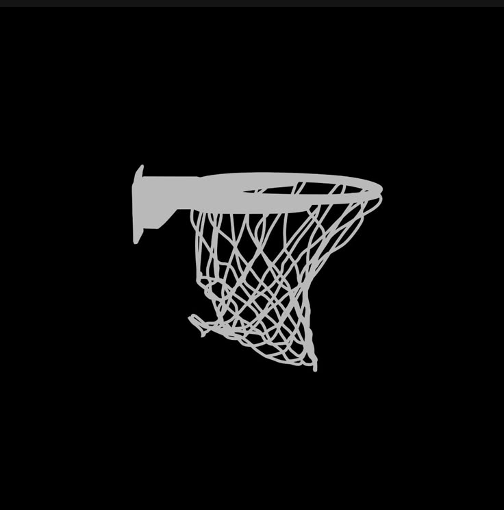

| Framework | Yii 2 (versión 2.0.55) |
| Lenguaje | PHP 8 |
| Base de datos | MySQL / MariaDB |
| Hosting | InfinityFree (plan gratuito) |
| URL publicada | https://lacanastayii.gt.tc/ |
| Nombre | Carné |
|---|---|
| Ricardo Andree Arias Conde | 5190-19-3821 |
| Angel Adrian Arias Conde | 5190-18-16246 |
| Darlyng Yasmin Marroquín Sosa | 5190-17-24336 |
El presente proyecto consiste en el desarrollo de una aplicación web usando un framework de desarrollo para el lenguaje PHP. El caso asignado es la tienda de artículos deportivos La Canasta, que necesita un sistema para registrar los resultados de todo el Torneo Navideño de Básquetbol, incluyendo los equipos, sus integrantes y las anotaciones de cada jornada, además de generar reportes estadísticos.
El framework asignado al grupo fue Yii 2, en su versión reciente 2.0.55. Se trabajó sobre la plantilla Yii 2 Basic Project Template, con PHP 8 y MySQL/MariaDB. La interfaz usa Bootstrap 5 a través del paquete yiisoft/yii2-bootstrap5.
El sistema cumple los siguientes requerimientos del enunciado:
| Requerimiento | Estado |
|---|---|
| Registro de jugadores: nombres y apellidos en campos distintos | Cumplido |
| Fecha de nacimiento y fotografía del jugador | Cumplido |
| Equipo como catálogo, con logo del equipo | Cumplido |
| Registro de puntos por jugador en cada jornada | Cumplido |
| Tipo de tiro como catálogo (libre, dos puntos, tres puntos) | Cumplido |
| Reporte: lista general de jugadores agrupada por equipo (con fotografía) | Cumplido |
| Reporte: jugadores por equipo, ordenados alfabéticamente por apellidos | Cumplido |
| Reporte: máximos anotadores, ordenado de mayor a menor | Cumplido |
| Consulta en pantalla de la ficha completa de un jugador | Cumplido |
La aplicación se encuentra publicada y accesible en Internet con certificado SSL (HTTPS):
https://lacanastayii.gt.tc/El código fuente completo está disponible en el repositorio del proyecto (ver Anexo E).
Esta sección describe el procedimiento completo, en orden cronológico, para dejar la aplicación funcionando y publicada en Internet. El proceso se organiza en dos fases claramente diferenciadas:
yii y las migraciones son herramientas del entorno local de desarrollo. El servidor de producción no las tiene ni las necesita.Software necesario, indicando el entorno en el que se utiliza cada herramienta:
| Software | Versión recomendada | Entorno | Uso |
|---|---|---|---|
| PHP | 8.0 o superior | Local y producción | Lenguaje de la aplicación |
| Composer | 2.x | Local | Gestor de dependencias (instala Yii 2 y librerías) |
| MySQL / MariaDB | 8.0 / 10.4 o superior | Local y producción | Base de datos del sistema |
| XAMPP | Reciente | Local | Paquete con Apache + MySQL + PHP (entorno de desarrollo) |
| Git | Reciente | Local | Clonar el repositorio |
| Navegador web | Chrome / Edge recientes | Local y producción | Acceso a la aplicación |
| Cliente FTP | FileZilla | Producción | Subir archivos al hosting |
pdo_mysql y mbstring. En XAMPP vienen habilitadas por defecto. Se pueden verificar con php -m.En esta fase se instala el framework con Composer y se prueba la aplicación en la máquina local. Todos los pasos siguientes son locales; el servidor de producción no los ejecuta.
git clone https://github.com/ravenc1/canasta_yii.git
cd canasta_yiiInstala exactamente las versiones registradas en composer.lock (Yii 2, Bootstrap 5, JQuery UI, SwiftMailer, Gii, Debug):
composer installCrea la base de datos lacanasta_db con codificación utf8mb4:
mysql -u root -e "CREATE DATABASE IF NOT EXISTS lacanasta_db CHARACTER SET utf8mb4 COLLATE utf8mb4_unicode_ci;"php yii migrate --interactive=0Esto crea las tablas equipo, jugador, tipo_tiro y puntuacion, e inserta los datos iniciales: 6 equipos, 30 jugadores, 3 tipos de tiro y 77 puntuaciones.
php yii serveLa aplicación queda disponible en http://localhost:8080/.
Antes de publicar, la aplicación se probó de forma manual y funcional en el entorno local. Los 45 casos de prueba (módulos de equipos, jugadores, puntuaciones, reportes, interfaz e integridad de IDs) se documentan en el archivo PRUEBAS.md del repositorio. Solo tras validar el funcionamiento local se procedió a la publicación.
Una vez validada la aplicación en local, se publica en InfinityFree, un hosting gratuito con PHP 8.4, MySQL 8.0 / MariaDB 11.4, soporte total de .htaccess y certificados SSL gratuitos. Este servidor tiene dos restricciones importantes que condicionan el despliegue:
composer ni php yii migrate en el servidor.htdocs y no puede cambiarse: siempre apunta a la carpeta htdocs.Por eso, en el servidor se resuelve así: la carpeta vendor se sube ya construida, los datos se importan por phpMyAdmin y un archivo .htaccess en la raíz redirige todo hacia web/ (el directorio público real de Yii).
https://dash.infinityfree.com/register (solo correo, sin tarjeta).lacanastayii.gt.tc).sqlXXX.infinityfree.com), nombre de la base, usuario y contraseña. En InfinityFree estos suelen tener el prefijo if0_.Como el servidor no permite ejecutar migraciones, se genera un respaldo .sql de la base local y se importa:
# En la máquina local, generar el respaldo:
mysqldump -u root --no-create-db --default-character-set=utf8mb4 lacanasta_db > lacanasta_db.sqllacanasta_db.sql y confirmar. Deben quedar 6 equipos, 30 jugadores, 3 tipos de tiro y 77 puntuaciones.Editar config/db.php con los datos obtenidos en el paso 2.3.2:
return [
'class' => 'yii\db\Connection',
'dsn' => 'mysql:host=sqlXXX.infinityfree.com;dbname=if0_XXXXXXX_lacanasta;charset=utf8mb4',
'username' => 'if0_XXXXXXX',
'password' => 'TU_PASSWORD',
'charset' => 'utf8mb4',
];web/index.php desactivar el modo de depuración, para no exponer rutas ni trazas de error a los visitantes:YII_DEBUG = false y YII_ENV = 'prod'.Subir el contenido del proyecto dentro de htdocs/ (es decir, htdocs/ debe contener config/, controllers/, models/, views/, vendor/, runtime/, web/ y el .htaccess de la raíz). Se recomienda FTP (FileZilla) por la cantidad de archivos de vendor/.
| Elemento | ¿Por qué? |
|---|---|
vendor/ | No hay Composer en el servidor; debe subirse ya construida |
runtime/ | Carpeta de trabajo de Yii (caché y logs); debe existir y ser escribible |
web/assets/ | Yii publica aquí los recursos (CSS/JS); debe existir y ser escribible |
.htaccess (raíz) | Redirige las peticiones hacia web/ |
web/.htaccess | Habilita las URLs amigables (pretty URLs) |
El archivo .htaccess de la raíz contiene:
RewriteEngine on
RewriteRule ^(.*)$ web/$1 [L]De esta forma, aunque el document root apunte a htdocs, el contenido público real (el que Yii espera) es el de la carpeta web/, y todas las peticiones se enrutan correctamente.
Desde el panel de control, usar la herramienta Free SSL Certificates para emitir el certificado del dominio. Con esto la aplicación queda accesible por https://.
Comprobaciones realizadas sobre el sitio en línea:
| Comprobación | Resultado |
|---|---|
| Página de inicio responde y renderiza | OK |
| HTTPS / SSL activo | OK |
| Hojas de estilo (CSS) y assets publicados | OK |
| Imágenes (logos, fotos, favicon) visibles | OK |
| Módulos de equipos, jugadores y puntuaciones con datos | OK |
| Reportes (general, por equipo, máximos anotadores y perfil) | OK |
htdocs/.Esta sección describe, en orden, cómo se utilizó Yii 2 para construir la aplicación.
Se creó la estructura inicial con Yii 2 Basic Project Template mediante Composer. La plantilla genera la organización MVC típica de Yii: config/, controllers/, models/, views/, web/ y un script de consola yii.
En config/web.php se configuraron los componentes de la aplicación:
db) apuntando a config/db.php.enablePrettyUrl = true y showScriptName = false.En lugar de crear las tablas a mano, se usaron migraciones, que versionan el esquema y permiten reconstruir la base de datos con un comando. Se crearon migraciones para las tablas equipo, jugador, tipo_tiro y puntuacion, con claves foráneas ON DELETE CASCADE, y una migración final (seeder) con los datos iniciales.
Cada tabla se mapeó a un modelo ActiveRecord: Equipo, Jugador, TipoTiro y Puntuacion. En los modelos se definieron:
rules()) y etiquetas de atributos.hasOne / hasMany), por ejemplo jugador–equipo y puntuación–tipo de tiro.Se implementaron controladores (EquipoController, JugadorController, PuntuacionController, ReportesController) con acciones para listar, crear, ver, editar y eliminar. La carga de archivos se maneja con UploadedFile y la validación se refuerza con addError() cuando un archivo no puede guardarse.
Se desarrollaron las vistas CRUD (listado con GridView, formularios reutilizables _form.php, detalle) y un layout principal (views/layouts/main.php) con barra de navegación, menús desplegables y personalización visual (fondo aleatorio, contenedores semitransparentes y favicon dinámico).
Se usó la herramienta Gii de Yii 2 para generar los modelos y el esqueleto de los CRUD a partir de las tablas, y luego se adaptaron a las necesidades del torneo.
Se definió un AssetBundle (assets/AppAsset.php) que registra la hoja de estilos propia y depende de Bootstrap 5, permitiendo una interfaz moderna y responsiva.
Los modelos Equipo y Jugador incluyen reglas de tipo file (extensiones y tamaño máximo de 2 MB) y métodos que guardan los archivos en web/uploads/. Un helper (ImagenHelper) construye las URL y usa una imagen de reserva si el archivo no existe.
Los reportes combinan el uso de ActiveRecord con consultas mediante Query y agregaciones SQL. Por ejemplo, los máximos anotadores usan SUM(puntuacion.puntos) agrupado por jugador y ordenado de mayor a menor.
prettyUrl desde el inicio y añadir el .htaccess correspondiente; las URLs limpias mejoran la presentación del proyecto.YII_DEBUG en false y YII_ENV en prod en el servidor para no exponer información interna.config/db.php (o en archivos locales ignorados por el control de versiones), nunca en el código de la lógica de negocio.rules() evita duplicar comprobaciones en los controladores.vendor/ ya construida e importar la base por phpMyAdmin.Valoración del grupo sobre la facilidad o dificultad de uso del framework Yii 2:
Yii 2 resultó un framework robusto y productivo. Tras superar la curva de aprendizaje inicial, sus herramientas (Gii, ActiveRecord, migraciones y la integración con Bootstrap) permitieron construir la aplicación de forma ordenada y rápida. La experiencia fue positiva y recomendamos su uso para proyectos web en PHP de tamaño pequeño y mediano.
canasta_yii/
├── assets/ Definición de assets (AppAsset)
├── commands/ Comandos de consola
├── config/ Configuración (web.php, db.php, params.php, console.php)
├── controllers/ Controladores MVC (Equipo, Jugador, Puntuacion, Reportes, Site)
├── helpers/ Clases auxiliares (ImagenHelper)
├── migrations/ Migraciones y datos iniciales
├── models/ Modelos de datos y formularios
├── views/ Vistas y layout principal
├── web/ Document root (index.php, css, assets, uploads)
├── composer.json Dependencias del proyecto
├── composer.lock Versiones exactas de dependencias
├── yii Script de consola de Yii
└── README.md Documentación del proyecto| Módulo | Rutas |
|---|---|
| Equipos | /equipo/index, /create, /view, /update, /delete |
| Jugadores | /jugador/index, /create, /view, /update, /delete |
| Puntuaciones | /puntuacion/index, /create, /delete |
| Reportes | /reportes/general, /por-equipo, /maximos-anotadores, /perfil?id=N |
| Entidad | Cantidad |
|---|---|
| Equipos | 6 |
| Jugadores | 30 |
| Tipos de tiro | 3 (Libre, Dos puntos, Tres puntos) |
| Puntuaciones | 77 |
| Requerimiento del enunciado | Evidencia |
|---|---|
| Nombres y apellidos en campos diferentes | Tabla jugador; formulario de alta |
| Fecha de nacimiento | Campo fecha_nacimiento (tipo fecha) |
| Fotografía (imagen) | Carga de archivo con validación |
| Equipo con logo (catálogo) | CRUD de equipos + carga de logo |
| Jornada, puntos y tipo de tiro | Tabla puntuacion + catálogo tipo_tiro |
| Lista general de jugadores agrupada por equipo | Reporte /reportes/general |
| Jugadores por equipo, orden por apellidos | Reporte /reportes/por-equipo |
| Máximos anotadores, de mayor a menor | Reporte /reportes/maximos-anotadores |
| Ficha completa de un jugador | Reporte /reportes/perfil |
https://github.com/ravenc1/canasta_yiiEl repositorio incluye el código fuente completo, las migraciones y las instrucciones de instalación y publicación (README.md).